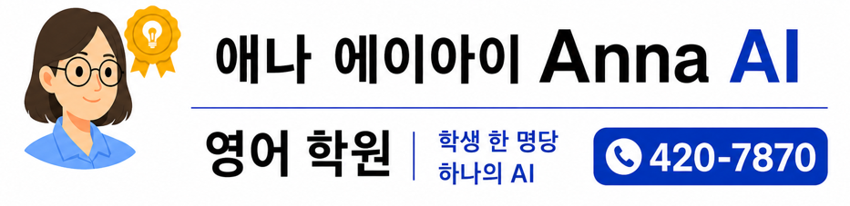
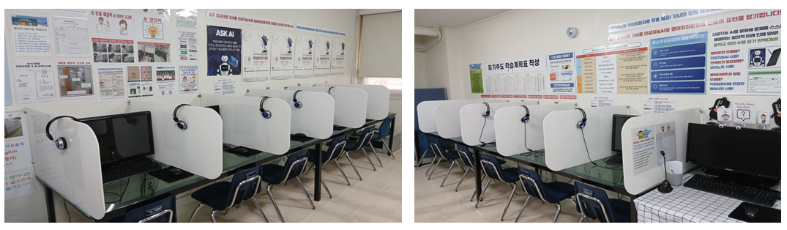
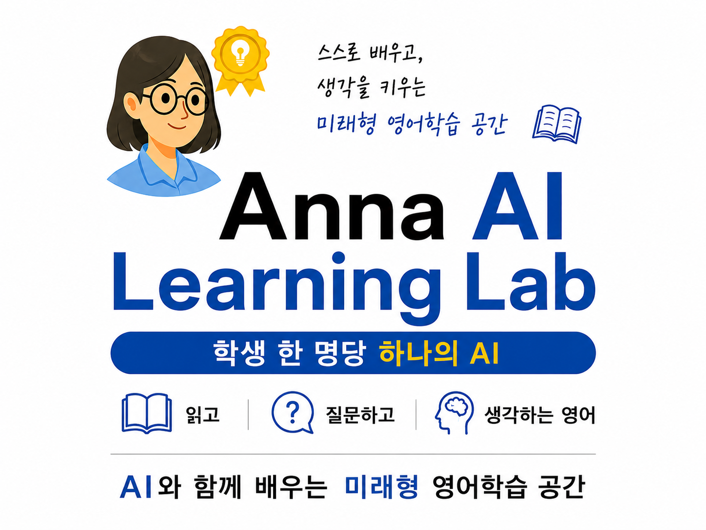
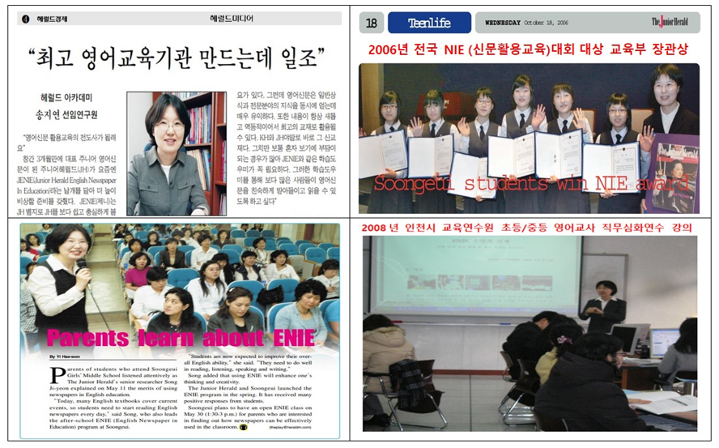
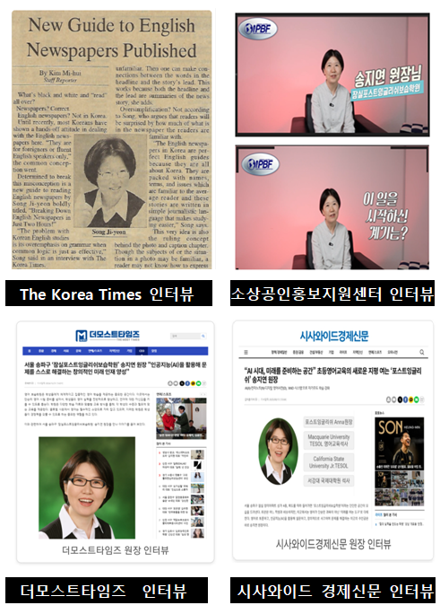
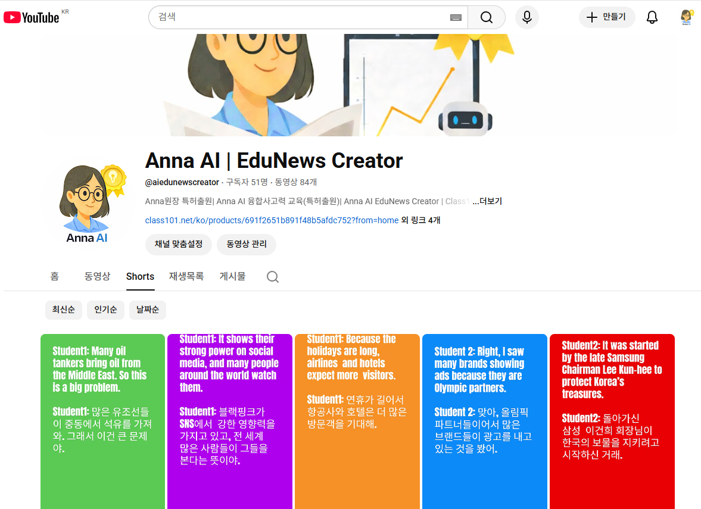
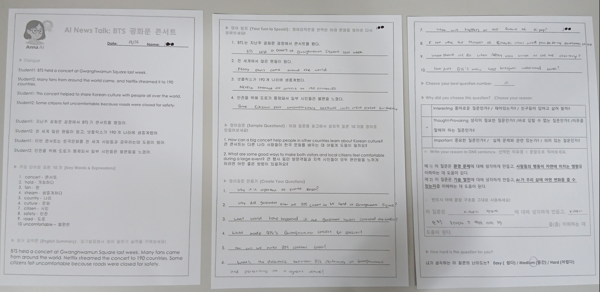
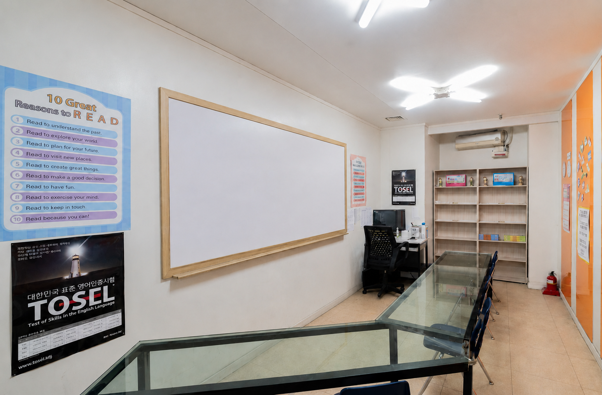
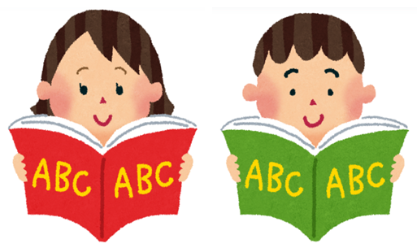

Q1. Anna AI 영어학원은 어떤 학원인가요?

Anna AI 영어학원
애나에이아이(Anna AI)영어학원은 AI를 활용한 질문 중심 융합 영어교육을 실시합니다.
스토리북, e-book 영어도서관, 뉴스 회화·질문 수업을 각각 분리된 활동으로만 운영하는 것이 아니라, 학생들이 읽은 내용을 바탕으로 질문하고 자신의 생각을 AI를 홀용해 영어로 표현하도록 지도합니다.
AI 시대에는 영어 지식을 익히는 것뿐 아니라, 스스로 질문하고 생각하는 능력이 중요해지고 있습니다. 그래서 기존 포스트잉글리쉬에서 애나에이아이(Anna AI)영어학원으로 이름을 변경했고
Anna AI라는 이름에는 영어교육의 기본기를 유지하면서 AI를 활용한 질문 중심 융합교육으로 발전하겠다는 교육 방향이 담겨 있습니다.
Q2. “학생 한 명당 하나의 AI”는 어떤 의미인가요?
학생마다 영어 수준과 학습 속도가 다르기 때문에, AI를 각자의 학습을 돕는 도구로 활용한다는 의미입니다.
학생들은 개별 컴퓨터가 마련된 Anna AI Learning Lab에서 AI를 활용해 영어 질문을 만들고 표현을 연습할 수 있습니다.
중요한 것은 AI가 학생 대신 생각하거나 답을 만들어 주는 것이 아닙니다.
학생이 먼저 생각하고, AI는 그 생각을 영어로 표현하는 과정을 돕습니다.
Q3. 통합 수업은 어떻게 진행되나요?
스토리북, e-book 영어도서관, 뉴스 회화·질문 수업은 원장이 직접 지도하는 통합 수업으로 운영됩니다.
학생들은 학습 수준과 활동 내용에 따라 영어독서와 뉴스 회화·질문 활동을 진행합니다.
예를 들어, 영어 동화책을 읽으며 내용을 이해하고, 뉴스 회화에서는 실제 세상의 다양한 주제를 접합니다. 이후 질문을 만들고 자신의 생각을 영어로 표현하는 활동으로 확장합니다.
세 가지 수업의 공통 목표는 읽은 내용을 이해하고, 질문하고, 생각하고, 표현하는 능력을 기르는 것입니다.
Q4. 원장님이 통합 수업을 직접 지도하시나요?

Learning Lab 교실 모습

Learning Lab 교실 안내판
네. 통합 수업은 원장이 직접 지도합니다.
Anna AI Learning Lab에서는 학생들이 각자의 학습 활동을 진행하며, 원장이 학습 수준과 진행 상황을 확인하고 지도합니다.
AI는 질문 만들기와 영어 표현 연습을 돕는 학습 도구로 사용합니다.
AI가 교사를 대신하는 것이 아니라, 원장이 AI를 활용하여 학생들의 학습을 지도하는 방식입니다.
문법 수업은 별도의 문법담당 교사가 지도합니다.
Q5. 원장님은 어떤 전문성과 경력을 갖고 계신가요?

Anna 원장 소개

Anna 원장 인터뷰 기사들
애나에이아이(Anna AI)영어학원의 통합 수업은 영어교육, 뉴스 콘텐츠 제작, AI 활용 교육 경험을 갖춘 원장이 직접 설계하고 지도합니다.
👉 영어교육 전문성
Macquarie University 영어교육 석사
서강대학교 국제대학원 석사
20년 이상 영어교육 연구·개발 및 지도 경력
인천시교육연수원 초·중등 영어교사 직무심화연수 강의
2013년부터 영어학원 운영 및 ReadingGate 영어도서관 지도
👉 뉴스·융합교육 전문성
The Junior Herald 영자신문 NIE 학습자료 6년간 제작
네이버 프리미엄콘텐츠 뉴스 회화 학습자료 연재
Class101 융합사고력 영어교육 강의
영어교육과 국제통상 분야의 학문적 배경을 활용한 뉴스 기반 교육
👉 AI 교육 연구
코딩 3급 자격증
NIPA 인공지능교육 수료
융합사고력 교육 관련 국내 특허 3건 출원
👉 이러한 교육 및 연구 경험을 바탕으로 원장이 직접 Anna AI 영어학원의 질문 중심 융합교육 프로그램을 운영합니다.
Q6. 뉴스 회화&질문 수업은 어떻게 진행되나요?

뉴스 회화 수업자료

뉴스 회화 수업자료
원장이 직접 제작한 뉴스 회화 학습자료를 학생들에게 프린트물로 제공합니다.
이 자료는 네이버 프리미엄콘텐츠와 Class101에서도 유료 교육 콘텐츠로 제공되고 있습니다.
수업 과정
흥미로운 뉴스 영어회화를 듣고 읽습니다.
핵심 단어와 영어 표현을 학습합니다.
질문 틀(Question Frames)을 참고하여 뉴스와 관련된 질문을 생각합니다.
학생이 먼저 한국어로 질문을 구상한 뒤, AI를 활용해 영어 질문으로 표현합니다.
완성한 영어 질문을 연습하고 암기하여 발표합니다.
이 과정에서 학생들은 영어를 읽고 이해하는 것뿐 아니라 스스로 질문을 만드는 경험을 쌓습니다.
Q7. AI는 영어수업에서 어떻게 활용하나요?
AI는 학생들의 영어학습을 돕는 보조 도구입니다.
예를 들어 학생이 뉴스에 대해 궁금한 점을 한국어로 생각했다면, AI를 활용해 그 질문을 영어로 표현하고 관련 영어 표현을 연습할 수 있습니다.
학생이 무엇을 질문할지 생각하는 과정이 먼저이고, AI는 이를 영어로 표현하는 데 도움을 줍니다.
생각의 주체는 학생이며, 수업의 지도와 판단은 교사가 담당합니다.
Q8. AI 활용 수업이 아이들에게 어렵지는 않나요?
학생마다 영어 수준과 학습 속도가 다르기 때문에 개별 수준에 맞춰 학습량과 활동을 조정합니다.
처음부터 어려운 영어 질문을 혼자 만들도록 요구하는 것이 아니라, 질문 틀과 교사의 지도를 활용해 단계적으로 연습합니다.
중요한 것은 AI 기능을 많이 사용하는 것이 아니라, 학생이 자신의 수준에서 직접 생각하고 질문하는 경험을 갖는 것입니다.
Q9. 문법 수업은 어떻게 진행되나요?
체계적 문법 학습

문법 교실 모습
문법 수업은 원장 지도 통합 수업과 별도로 진행되며, 문법담당 교사가 학생 수준에 맞춰 체계적으로 지도합니다.
애나에이아이(Anna AI)영어학원은 읽기·질문·표현 능력을 기르는 통합 수업과 레벨별 문법 학습을 함께 운영합니다.
이를 통해 영어를 활용하는 능력과 문법 기초를 균형 있게 지도하고자 합니다.
Q10. 결석한 학생의 보충수업은 어떻게 진행되나요?

화/목 저녁 7시~8시 보충수업 실시
결석생을 위한 보충수업을 다음 시간에 운영합니다.
화요일·목요일 오후 7시~8시
구체적인 보충 참여 방법은 학원에 문의해 주세요.
Q11. 학원 정보를 한 눈에 볼 수 있는 싸이트가 있나요?